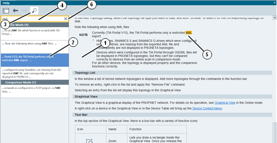

只要通过从标题栏右侧的“是否需要帮助”(Help?) 下拉菜单中选择“帮助”(Help) 条目或按下“F1”按钮，即可切换到 PRONETA Basic 在线帮助。打开 PRONETA Basic 窗口右侧的“帮助视图”(Help View)，在该视图中可通过滚动、点击链接或从目录中选择条目来浏览帮助主题。可通过向左或向右拖动窗格边框来更改视图大小。
帮助中提供与本手册内容相同的信息。
功能栏
“帮助视图”(Help View) 标题中包含一个功能栏，其中包括四种功能：
|
图标 |
名称 |
功能 |
|
显示目录 |
切换目录视图。 |
|
|
|
显示上一主题 |
转至浏览历史记录中的上一主题。 |
|
|
显示下一主题 |
转至浏览历史记录中的下一主题。 |
|
在帮助中搜索 |
在“帮助视图”(Help View) 中切换“搜索视图”(Search View)。 |
帮助视图内容
“帮助视图”(Help View) 由一个或两个从左到右排列的元素组成。除主帮助主题 (1) 外，左侧还有另一个可选的窗格 (2)，该窗格中将显示目录或搜索视图。

搜索
单击标题栏中的“在帮助中搜索”(Search in Help) 图标 (3) 将打开或关闭搜索视图。
在搜索字段 (4) 中输入搜索词后，PRONETA Basic 将在整个帮助内容中执行全文搜索，并在搜索字段下方显示结果列表。单击其中一个结果条目会跳转到相应的主题，搜索词会在列出内容中突出显示。(5)
搜索内容不区分大小写，且不允许使用通配符或正则表达式。搜索“opolo”会同时找到“topology”和“TOPOLOGIES”
单击搜索字段 (6) 右侧的“×”符号可清除搜索词和所有搜索结果。
目录
单击目录中的任意主题将跳转到相应的帮助主题。
帮助主题
当前所选帮助主题的视图。使用右侧的滚动条在帮助主题中上下导航。
要关闭“帮助视图”(Help View)，请执行以下操作之一：
单击视图标题栏右上角的“×”符号。
点击“F1”。
在 PRONETA Basic 窗口右上角的“是否需要帮助”(Help?) 菜单中，选择“帮助”(Help)。